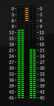

Dynamics¶
Compressor¶
A peak compressor with optional external side-chain input.
The following controls are provided:
Input - adjust the input level from -20 dB to +20 dB.
Threshold - set the compression threshold from -40 dB to 0.
Ratio - set the compression ratio from 1:1 to 10:1.
Attack - set the attack time from 0.1 ms to 200 ms.
Release - set the release time from 50 ms to 1 sec.
Makeup - set the gain applied to the signal post-compression from 0 dB to 20 dB.
Mix - set the dry/wet balance of the output from all dry (0) to all wet (100%).
The following controls apply to the sidechain (detector) signal:
Listen - replace the output signal with the sidechain signal for monitoring.
External - set the sidechain input to receive the signal through audio inputs 3/4.
Trim - adjust the input level of the sidechain signal from -20 dB to +20 dB.
Low Cut - set the cutoff of the highpass filter applied to the sidechain input from 10 Hz to 2 kHz.
The plugin meter shows input levels on the left, output levels on the right and the gain reduction level in the centre:
The signal flow is as follows:
The side chain signal in the lower half of the diagram is derived from either the main stereo input (1/2) or an external stereo input (3/4) as determined by the External switch. It can then be adjusted using the Trim and Low Cut controls before being used to determine the gain reduction applied to the main signal flow, shown in the upper part of the diagram.
The Listen switch can be used to temporarily divert the sidechain signal to the audio output to allow the signal to be monitored, both aurally and via the input level meter.
The Mix control combines the uncompressed signal (after the input trim control) with the compressed signal (after the makeup gain control) to provide for parallel compression techniques, or to simply compare the compressed output signal with the original uncompressed input.
Limiter¶
A ‘soft’ limiter with optional hard-clipper.
The following controls are provided:
Input - adjust the input level from -20 dB to +20 dB.
Threshold - set the limiting threshold from -40 dB to 0 dB.
Clip - set the clipping threshold from -40 dB to +3 dB.
Release - set the release time from 50 ms to 1 sec.
Limiter is a ‘soft’ limiter in that it does not provide ‘brick-wall’ limiting. The input signal can exceed the limiting threshold but usually no more than about 0.3 dB. Use the Clip control to set a hard limit at the required threshold if necessary. Set the Clip control below the limiter threshold for some hard-clipping distortion or set it to +3 dB to deactivate it completely.
The Limiter meter includes displays for stereo input, gain reduction and stereo output:

Limiter uses a look-ahead buffer to manage the incoming signal which introduces a fixed latency of 1.5 ms into the plugin’s signal flow.
Gate¶
A noise-gate with optional external side-chain input.
The following controls are provided:
Input - adjust the input level from -20 dB to +20 dB.
Low - set the threshold lower limit to -40 dB (off) or -80 dB (on).
Threshold - set the threshold from -40 dB to 0 dB or -80 dB to 0 dB according to the Low setting.
Attack - set the attack time from 0.1 ms to 200 ms.
Hold - set the hold time from 0 to 1 sec.
Release - set the release time from 50 ms to 1 sec.
The following controls apply to the sidechain (detector) signal:
Listen - replace the output signal with the sidechain signal for monitoring.
External - set the sidechain input to receive the signal through audio inputs 3/4.
Trim - adjust the input level of the sidechain signal from -20 dB to +20 dB.
Low Cut - set the cutoff of the highpass filter applied to the sidechain input from 10 Hz to 2 kHz.
The signal flow is as follows:
The side chain signal in the lower half of the diagram is derived from either the main stereo input (1/2) or an external stereo input (3/4) as determined by the External switch. It can then be adjusted using the Trim and Low Cut controls before being used to control the output signal.
The Listen switch can be used to temporarily divert the sidechain signal to the audio output to allow the signal to be monitored, both aurally and via the input level meter.
Expander¶
A downward expander with optional external side-chain input.
The following controls are provided:
Input - adjust the input level from -20 dB to +20 dB.
Low - set the threshold lower limit to -40 dB (off) or -80 dB (on).
Threshold - set the threshold from -40 dB to 0 dB or -80 dB to 0 dB according to the Low setting.
Ratio - set the expansion ratio from 1:1 to 10:1.
Attack - set the attack time from 0.1 ms to 200 ms.
Release - set the release time from 50 ms to 1 sec.
The following controls apply to the sidechain (detector) signal:
Listen - replace the output signal with the sidechain signal for monitoring.
External - set the sidechain input to receive the signal through audio inputs 3/4.
Trim - adjust the input level of the sidechain signal from -20 dB to +20 dB.
Low Cut - set the cutoff of the highpass filter applied to the sidechain input from 10 Hz to 2 kHz.
As the name might suggest the Expander is basically an ‘inverted’ compressor in that it allows dynamic range to be increased by applying gain reduction to the signal when it falls below a set threshold. These basic differences aside the controls of the Expander are much the same as those of the Compressor: set the Threshold to determine when gain reduction is applied and the Ratio to determine by how much.
Although it is similar in operation to the Compressor, the signal flow of the Expander is closer to that of the Gate since it lacks the Makeup and Mix controls of the compressor:
In fact it can be useful to think of the Expander as a Gate, in which the signal below the threshold is reduced rather than blocked.
As with the Compressor and Gate the signal used to determine the gain reduction can be trimmed, filtered and monitored using the controls in the sidechain section. Activate the External switch to use an external signal (from inputs 3/4) to control the expansion.
DeEsser¶
A de-esser for reducing sibilance and other unwanted high-frequency sounds.
The following controls are provided:
Input - adjust the input level from -20 dB to +20 dB.
Threshold - set the threshold from -80 dB to 0 dB.
Amount - set the reduction amount from 0 to 100%.
Attack - set the attack time from 1 ms to 100 ms.
Release - set the release time from 50 ms to 250 ms.
Low Freq - set the lower limit of the de-essing band from 1 kHz to 10 kHz.
High Freq - set the upper limit of the de-essing band from 1500 Hz to 15 kHz.
Listen - limit the output to just the de-essing band for monitoring.
DeEsser allows the levels of excess sibilance and other unwanted high frequency sounds to be reduced. It is based on a narrow-band compressor that allows a selected range of frequencies to be dynamically reduced without affecting frequencies outside that range. The Low Freq and High Freq controls determine the range of the centre frequency band in which the DeEsser operates; anything above or below that range is left unchanged.
Being based on a compressor, the DeEsser operates in much the same way as any other compressor; gain reduction is applied to the signal in the ‘de-essing’ band when it exceeds the Threshold level, by a ratio determined by the Amount control. Use these controls in combination with Low Freq and High Freq to best isolate and reduce the unwanted high frequency peaks in the input signal. Use the Listen switch to silence the frequencies outside the de-essing band allowing the effect of the gain reduction to be heard more clearly.
Attack and Release work as they would in any other compressor; use them when necessary to smooth the changes in gain reduction applied to the signal.
The DeEsser meter includes displays for stereo input, level reduction and stereo output:
